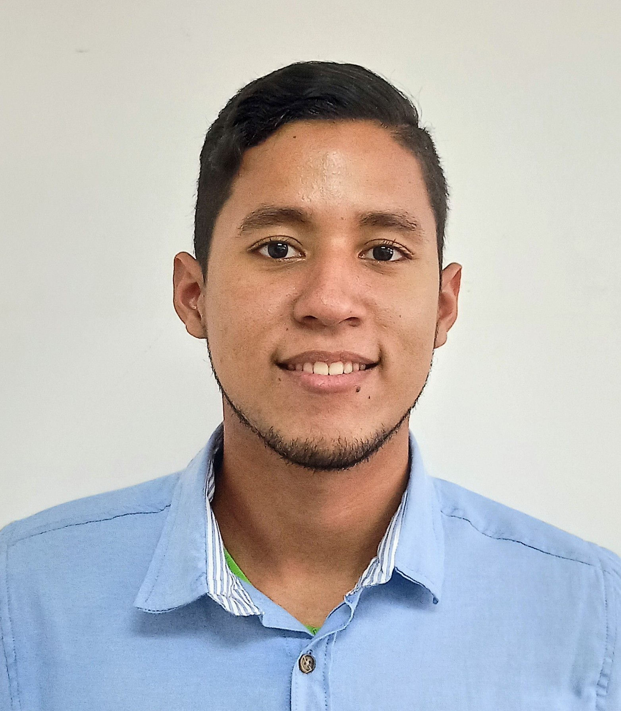
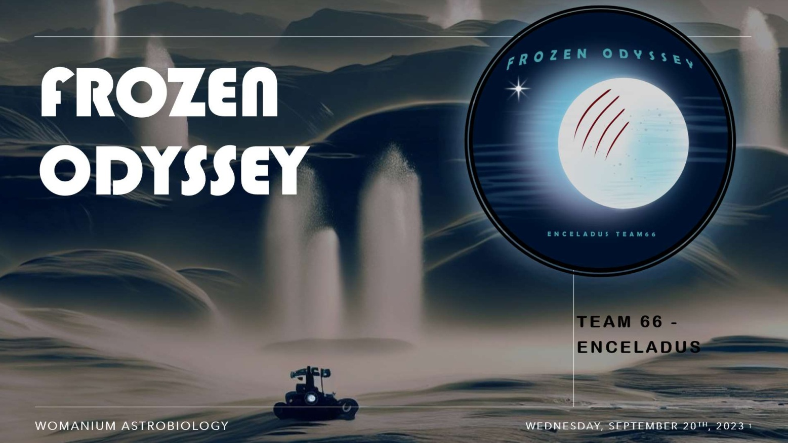
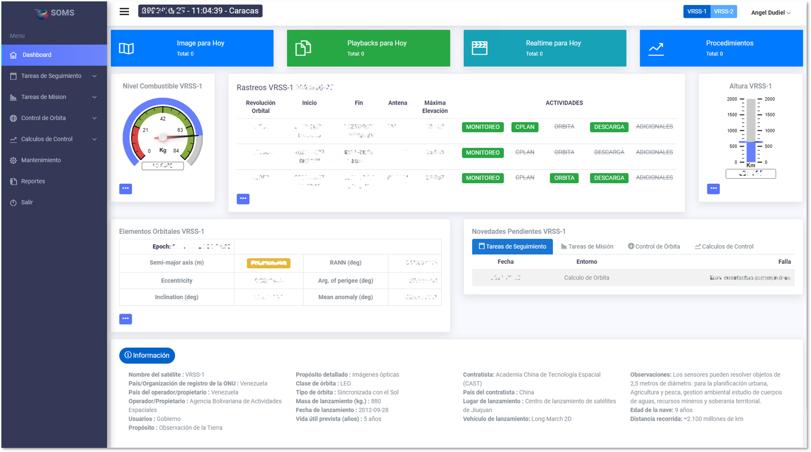
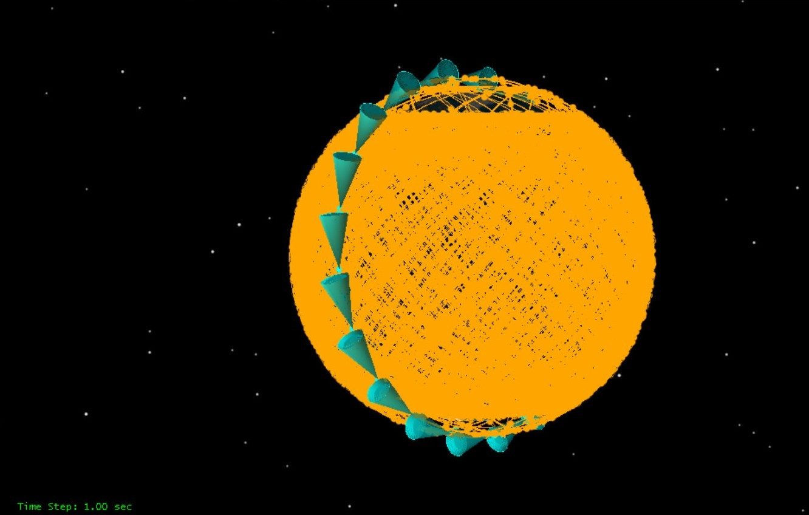
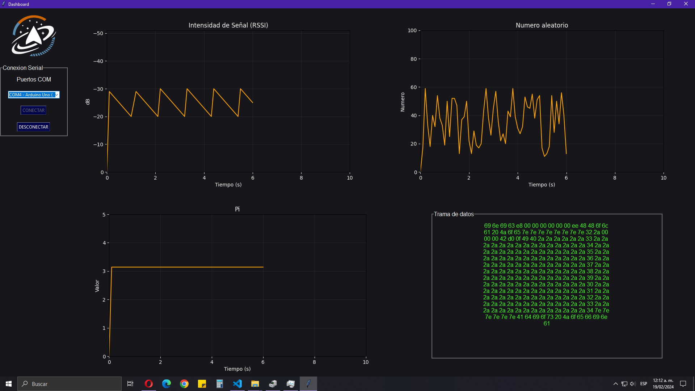

// Systems engineer working across space, software & AI
Angel Dudiel
Herrera
Systems Engineer · Space Technology & AI Researcher
I operate Earth-observation satellites at ABAE and build the software, data systems, and machine-learning tools behind them. My work spans satellite operations, AI, and optimization — currently pursuing a master's in Micro-satellite Technology at Beihang University.
Engineer at the intersection of space, code, and AI.

AI'm a systems engineer and space-technology researcher. At ABAE — Venezuela's space agency — I operate the VRSS-1 and VRSS-2 Earth-observation satellites and build the software and data systems that keep their operations running.
My second language is code. I work in Python, C++, and MATLAB, increasingly at the intersection of aerospace and AI — deep learning, computer vision, LLMs and AI agents, and optimization. I'm comfortable from telemetry pipelines to PyTorch models.
I'm completing a master's in Micro-satellite Technology at Beihang University (RCSSTEAP fellowship), after a Systems Engineering degree from UNEFA, where I graduated with honors and earned national Novel Researcher recognition.
Outside work I'm into emerging tech, cycling, and Dungeons & Dragons. I took 2nd place at the 2021 NASA Space Apps Challenge and serve Venezuela's space community through SGAC and SENCAMER.
The tools I build with.
From satellite telemetry to neural networks.
▹Languages & Tools
▹AI & Machine Learning
▹Space & Engineering
Three tracks I work across.
Unified by one question: how can software, AI, and optimization make space and autonomous systems more capable?
Satellite Operations & Space Tech
Operating Earth-observation spacecraft and researching micro-satellite technology, mission design, and the ground systems behind them.
AI & Machine Learning
Deep learning, computer vision, and LLM-based agents applied to aerospace data, automation, and engineering workflows.
Optimization & Simulation
AI-driven topology optimization, constellation design, and large-scale simulation with STK and Python data processing.
Projects.
Research and engineering across mission concepts, software systems, and simulation.

Frozen Odyssey — Astrobiology Mission for Enceladus
A conceptual mission architecture to search for biosignatures in Enceladus's subsurface ocean, built around 'the Diver' — an unmanned vehicle that uses the Venturi effect to navigate the plumes with ejected liquid as propulsion. Integrates orbiter, lander, rover, and diver to detect organic compounds and characterize the ejected material.

SOMS — Space Operations Management System
A space operations management system designed at ABAE to centralize, visualize, and manage operational data from the VRSS platform, replacing fragmented Excel workflows. Automates report generation, optimizes information retrieval, and delivers a dashboard for telemetry, orbital elements, and tracking — supporting decisions in the satellite control center.

Constellation-Based Space Monitoring
A study evaluating and optimizing a LEO satellite constellation for space-based monitoring of resident space objects, using STK simulations and Python. Established performance baselines across 400–550 km altitudes and optimized sensor azimuth–elevation orientation via a parallelized multi-phase grid search — achieving a 73.5% improvement in total visibility against a 6,867-satellite Starlink target set.

CANSAT Mission & Telemetry Dashboard
An end-to-end CANSAT project covering mission design and a Python-based dashboard for real-time telemetry monitoring. Defined the mission concept and operational requirements, then built a visualization interface to track the satellite's telemetry during flight and support post-mission analysis.